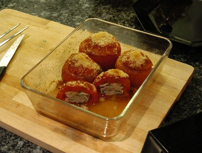

| Zutaten für 4 Personen: | |
| 8 | Tomaten |
| 200 g | Kalbsbrät |
| 50 g | Sbrinz |
| 1 | Zwiebel |
| 1 El | Butter |
| 1 Tl | Basilikum |
| 2 El | Petersilie |
| Salz | |
| Pfeffer | |
Von den gewaschenen und abgetrockneten Tomaten je einen kleinen Deckel abschneiden. Die Tomaten aushöhlen und würzen.
Zwiebel hacken und in Butter andämpfen, etwas auskühlen lassen.
Dann mit den gehackten Kräutern und Brät gut vermischen und in die Tomaten verteilen. Den Deckel wieder aufsetzten. Die Tomaten in eine ausgebutterte Gratinplatte stellen und mit Sbrinz bestreuen.
Im vorgeheizten Ofen bei 220°C etwa 20 Minuten garen.
Beobachter, 20/89
Ist am 18.5.2009 ausgezeichnet gelungen. Schmeckt fein und ergibt mit einem Salat ein tolles leichtes Sommergericht. RE
@LINKBACK_TAG@ @WAKELOCK@